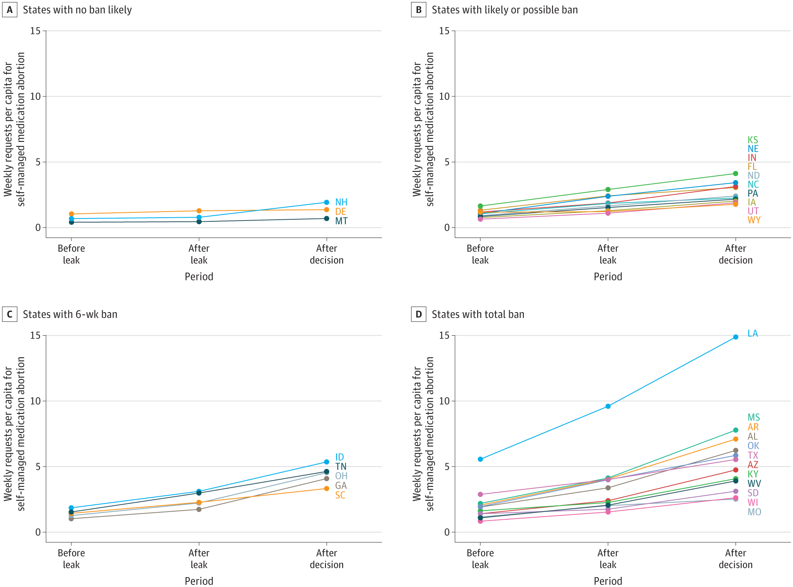

The 2022 Dobbs V. Jackson Supreme Court decision caused many states to subsequently ban or restrict access to abortion in hopes of eliminating or at least reducing abortions. However, a recent study shows the United States has seen an increase in pregnancy terminations within the first year of the Dobbs decision.
More than 20 states banned or restricted abortion after the Dobbs decision, and in those states, abortions decreased and births increased by an average of 2.3%, IZA Institute of Labor Economics found. However, another research group, WeCount, found abortions increased nationally.
Despite the bans and restrictions in the South and Midwest, abortions rose in most other states where it remained legal, especially in border states. Many women travel out of their home state to receive treatment. Existing clinics saw an increase in patients, and new clinics were opened in states that protect abortion to help manage the great influx of patients.
Moreover, a JAMA study found an increase in requests for self-managed abortion medication through telemedicine after the Dobbs decision. Requests can be made through virtual clinics like Hey Jane or overseas vendors like Aid Access.
This expansion to access was impactful for not only women in states with abortion bans, but also for women in states where it remained legal. Often, women who would seek an abortion fail to do so because of shame and stigma. Online medication abortions offer a discrete solution for women everywhere, and they were most likely a major contributing factor to the increase in national abortions.
The in-depth IZA analysis also researched the impact on different age groups and races. Their findings showed that women in their 20s and Black and Hispanic women had the greatest increase in births.
Researchers attributed these findings to the typical financial status of these groups. Young women and women of color tend to be poorer, which complicates their ability to travel out of state. Also, a New York Times report found these groups are more likely to seek out an abortion. The report does not incude measures on race because the data is less complete and omits 20 states. However, the data suggests just over a third of women who obtain abortions are black, and another third are white.
Understanding the barriers many women experience helps explain why the biggest birth increases were in states where women had to travel the farthest. For example, Texas had the greatest increase in average driving distance. Texas also had the greatest estimated increase in births due to the abortion ban.
The IZA analysis also suggests that younger women may have turned to online abortion websites to self-manage the procedure. The JAMA study found increased popularity for this method in every state they tracked, regardless of abortion policy. Data suggests online abortion medication orders may be a solution for many women who seek an abortion in a post-Roe society.
This data is preliminary. Although Dobbs was enacted over a year ago, national and pregnancy data take a long time to accumulate. A deeper analysis of the effect of Dobbs will not be available for another year, a New York Times article reported.
Researchers are aware these trends may change as more data becomes available and as the United States continues to navigate the post-Roe era. This initial data is important for predicting the future of abortion in America and understanding the impact changing policy has had on women in the first year of Dobbs.